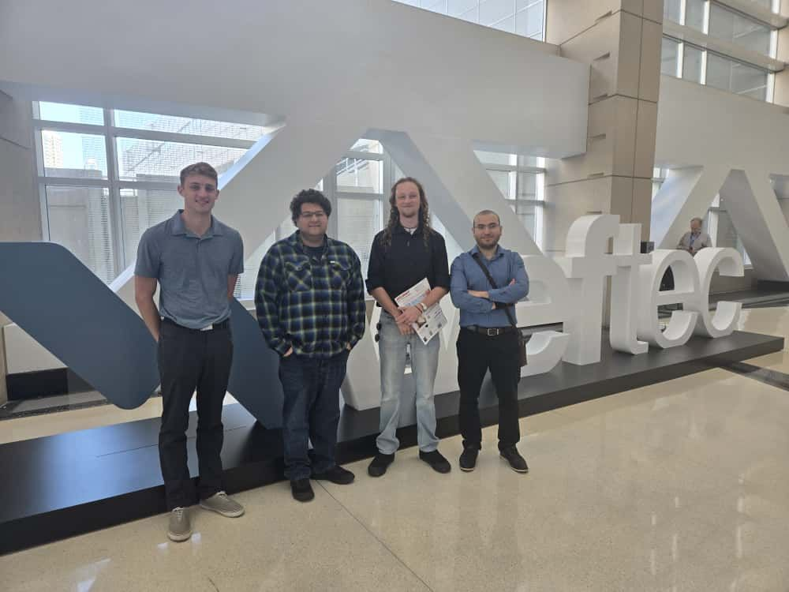

I view the classroom as a place to build the habits of engineering thinking: curiosity, evidence-based decisions, teamwork, and reflection.
My teaching integrates collaborative problem-solving, case studies, field visits, laboratory experiences, and practitioner perspectives to connect fundamental concepts with real engineering systems.

Student Mentorship & Conference Engagement (WEFTEC)
Supporting students beyond the classroom with national water conference exposure, professional networking, and applied engineering seminars.
Student Supervision & Capstones
HONORS CAPSTONE RESEARCH
Connor Bendele — PFAS Removal
Supervised undergraduate honors student Connor Bendele's capstone project investigating innovative adsorption methods for toxic PFAS removal from aqueous environments.
MUNICIPAL & INDUSTRIAL TEAMS
City of Midland & Highland Plastics
Guided student teams in the hydraulic and mechanical design of a municipal grit removal facility and industrial waste heat recovery systems.